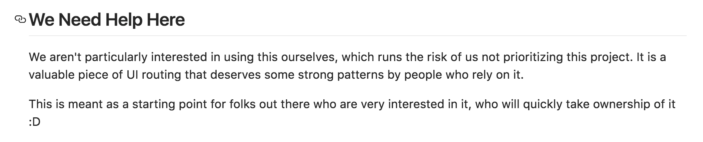
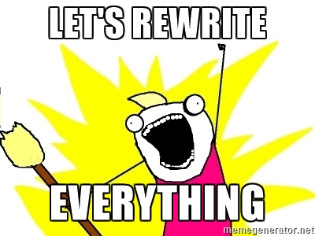

React State of Routing
Created by Andrii Malaman
Andrii Malaman
- Frontend Developer
- Work with react for last 2 years
- Work with react-native for last 6 month
- Github: https://github.com/malaman
Inputs
- E-commerce project
- SPA application
- SEO is important
- React as a View
How many of you will not use react-router with these inputs?
- Is react-router safe choice?
- Are there good alternatives available?
Assesment metrics
- Forks
- Watchers
- Stars
- Age
- Pull Requests
- Refactoring (%)
- Releases
- Bus factor (%)
Refactoring (%)
Balance between added and deleted code. Crude value not including semantic understanding of the code.
Bus factor (%)

Will the project fail if this member is hit by the bus?
React-router
| Metric | Value |
|---|---|
| üç¥ | 3855 forks. |
| üî≠ | 651 watchers. |
| üåü | 16896 stars. |
| üóì | Created over 2 years ago; last push 37 minutes ago. |
| üçª | 1141 PRs: 1135 closed; 6 opened; 99.47% PRs are closed. |
| üõ† | Deletions to additions ratio: 95.68% (-351378/367234). |
| üì¶ | 95 releases; latest release "v4.0.0-alpha.4": 17 days ago. |
| üöå | Bus factor: 50.0% (2 impactful contributors out of 100). |
Creators
Some react-router facts
- Originally inspired by the Ember router
- Three major versions under active development simultaneously
- 8 releases with breaking changes during last 2 years
react-router v1
- Out of support
- First Production ready release: November 2015 (1.0.0)
- Last release: December 2015 (1.0.3)
react-router v2
- The most popular routing library for react
- UI routing (route to component matching)
- Route hooks (onEnter, onChange, onLeave)
- Central routing configuration is possible
- Redux bindings
react-router v2
- http://mobile.twitter.com
react-router v3
- Remove all deprecated functionality of v2
- Support history v3 instead of history v2
- Add router to property for route components
react-router v4
- Start of development: June 2016
- Complete rewrite
- Current release: v4.0.0-alpha.5
- Should work with react-native
- No route hooks
- No central route config
Principles
- Everything is react component
- location prop is similar to window.location
- Match component turns a location into UI
Component props
- location - {hash, pathname, query, search, state}
- pathname - current pathname
- pattern - match pattern
Route hooks
- onEnter = componentWillMount
- onChange = componentWillReceiveProps
- onChange = componentWillUnmount
Central route config
- No implementation out of the box
- Options:
- Use React components view hierarchy
- react-router-addons-routes
react-router-addons-routes
 https://github.com/ReactTraining/react-router-addons-routesIntegration with redux
Programatically navigation
- Try to avoid it
- Use Link component instead
- If necessary use context injection
Migration from v2/v3
- Use both version simultaneously
- Step by step migration